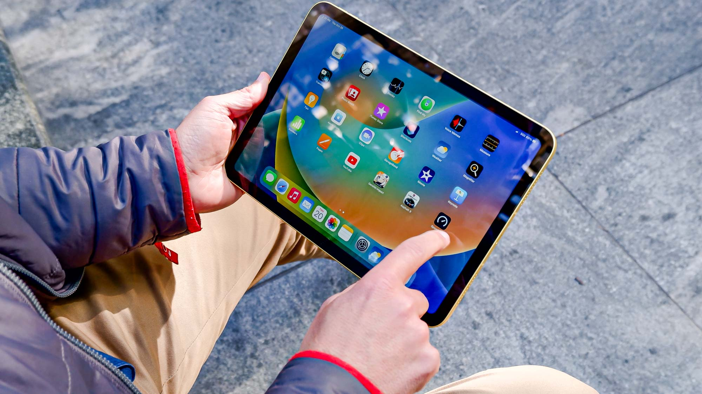

Gallery Images
The images below show examples of devices that help students with learning, communication and completing work.

Laptop
Laptops are useful for writing assignments and research.
Smartphone
Smartphones help students communicate and access online resources.

Tablet
Tablets are useful for reading, note-taking and study apps.
Newspaper Columns Example
Technology has changed the way students learn. Online tools allow students to
work faster and stay organised. Digital learning materials are easy to access
and can be used at home or in college. Communication is also easier because
students can email, join online classes and share files quickly. Technology
supports both independent study and group work. However, students should use
technology carefully and avoid distraction while studying.